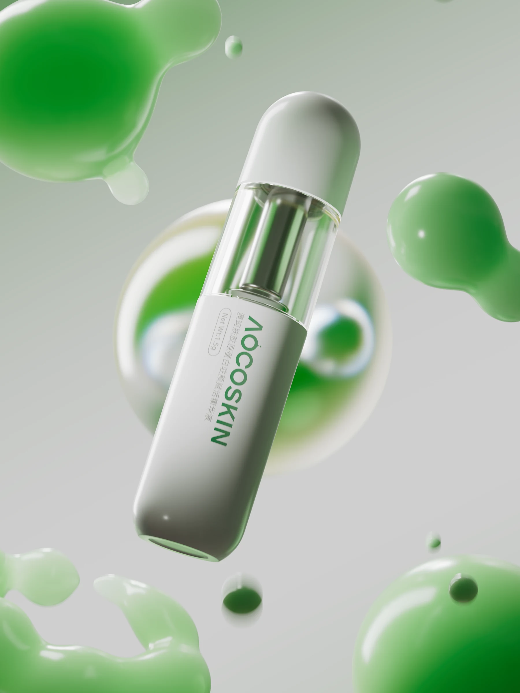
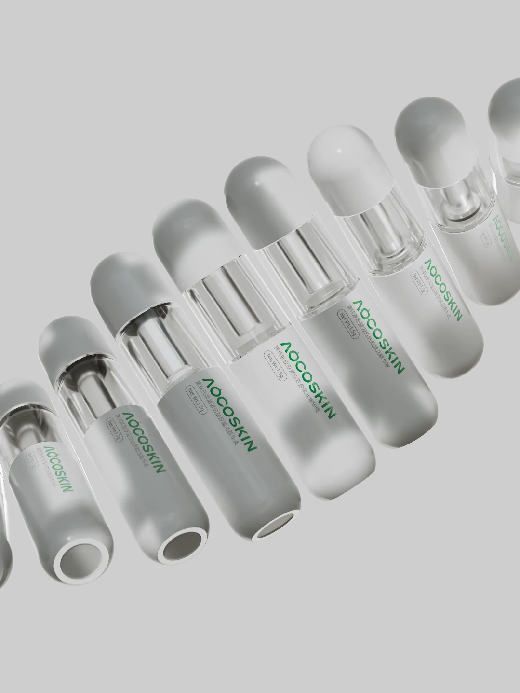
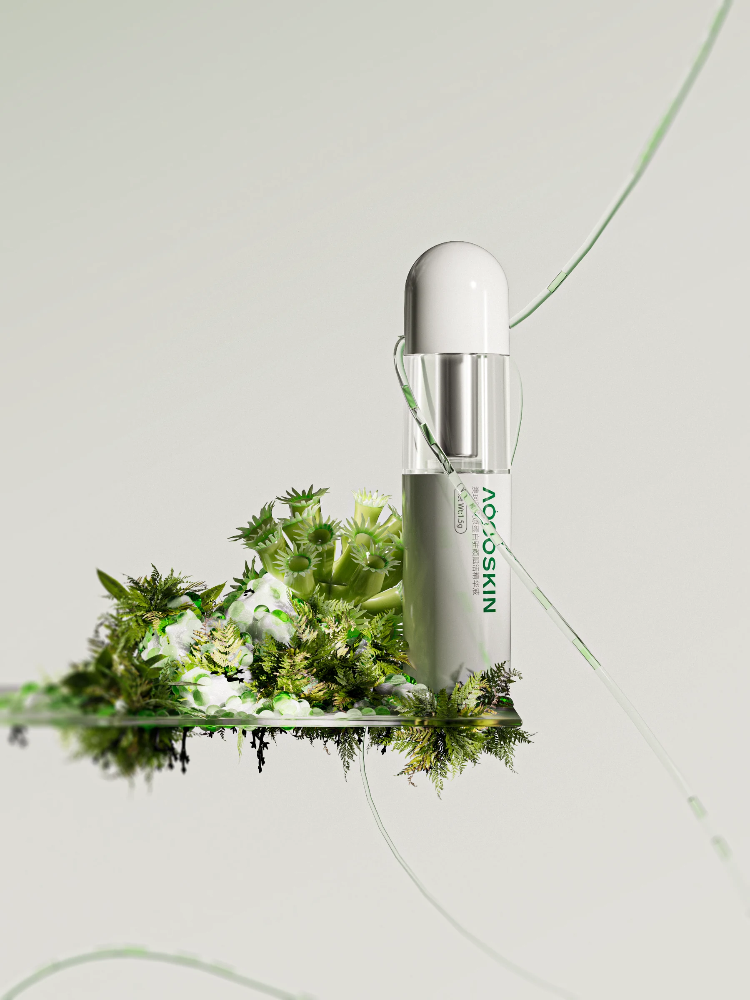
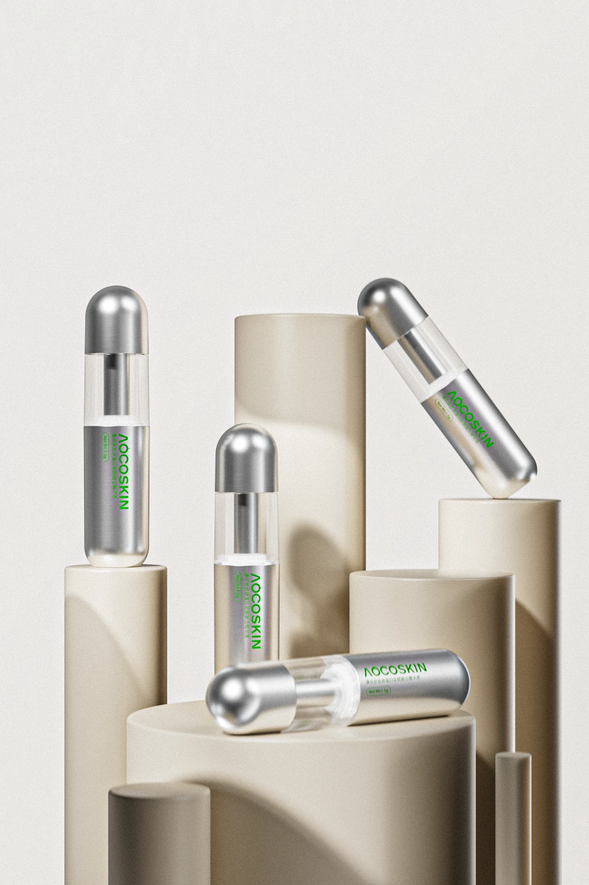
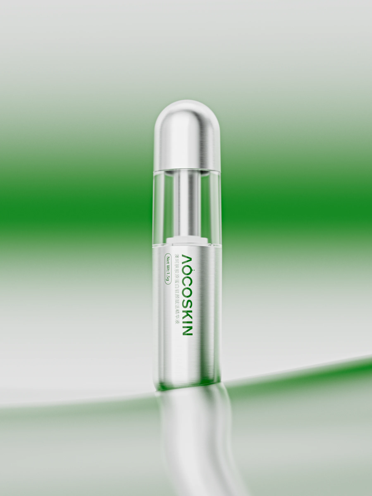
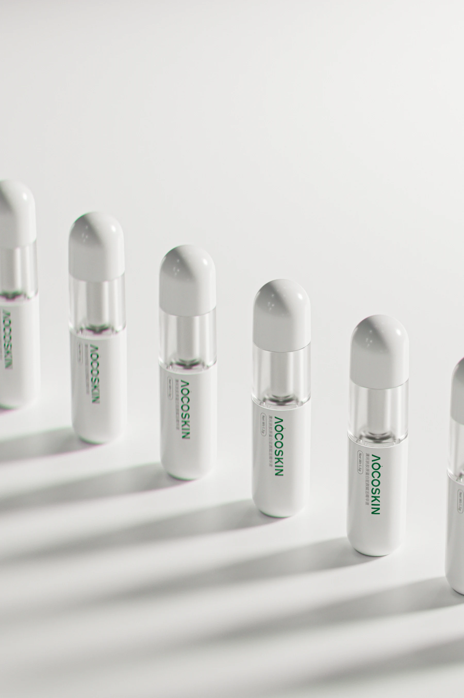
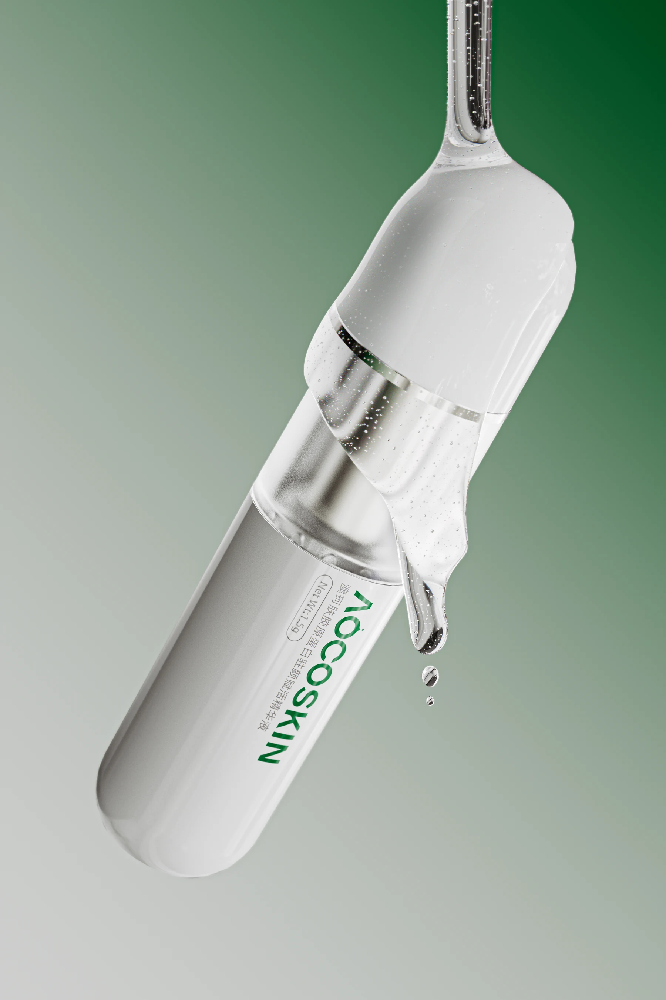

[XY.011] / 2024
AOCOSKIN
护肤产品 · 三维视觉
以清透的瓶身、柔和的光线和植物感材质，展开 AOCOSKIN 护肤产品的视觉表达。
- 创作方向
- 3D / Product Visual
- 工具 / 类型
- CINEMA 4D














[ NEXT PROJECT / XY.012 ]
[XY.011] / 2024
护肤产品 · 三维视觉
以清透的瓶身、柔和的光线和植物感材质，展开 AOCOSKIN 护肤产品的视觉表达。






